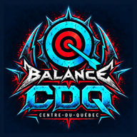

Balance CDQ — Rapports d’étalonnage
Cette installation est maintenant indépendante de CDQ Script Manager. Chaque icône ouvre uniquement sa propre application.
Ouvrez cette page dans Chrome ou Edge pour installer l’application.
Important : si l’ancienne icône « Étalonnages » est encore installée, installez cette nouvelle version puis retirez seulement l’ancienne icône de rapports. Ne désinstallez pas CDQ Script.
https://jprodrigue86.github.io/Rapports--talonnages-CDQ/reports/installer.html